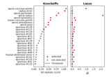

ModelXKnockoff#
- class hidimstat.ModelXKnockoff(estimator=None, ko_generator=None, n_repeats=1, centered=True, preconfigure_lasso_path=True, random_state=None, joblib_verbose=0, n_jobs=1)[source]#
Bases:
BaseVariableImportanceModel-X Knockoff
This module implements the Model-X knockoff inference procedure, which is an approach to control the False Discovery Rate (FDR) based on Candes et al.[1]. The original implementation can be found at https://github.com/msesia/knockoff-filter/blob/master/R/knockoff/R/knockoff_filter.R The noisy variables are generated with second-order knockoff variables using the equi-correlated method.
In addition, this function generates multiple sets of Gaussian knockoff variables and calculates the test statistics for each set. It then aggregates the test statistics across the sets to improve stability and power.
- Parameters:
- estimatorestimator, default=LassoCV(…)
Estimator used to compute knockoff statistics. Must expose coefficients via coef_ (or best_estimator_.coef_ for CV wrappers) after fit.
- ko_generatorobject
Knockoff generator implementing fit(X) and sample(n_repeats, random_state).
- n_repeats: int, default=1
Number of knockoff draws to average over.
- centeredbool, default=True
If True, standardize X before fitting the generator and computing statistics.
- preconfigure_lasso_pathbool, default=True
An optional function is called to configure the LassoCV estimator’s regularization path. The maximum alpha is computed as alpha_max = max(X_ko.T @ y) / (2 * n_features) and an alpha grid of length n_alphas is created between alpha_max * exp(-n_alphas) and alpha_max.
- random_stateint or None, default=None
Random seed forwarded to the knockoff generator sampling.
- joblib_verboseint, default=0
Verbosity level for parallel jobs.
- n_jobsint, default=1
Number of parallel jobs (automatically capped to n_repeats).
- Attributes:
- importances_ndarray, shape (n_repeats, n_features)
Test statistics for each repeat.
- pvalues_ndarray, shape (n_repeats, n_features)
Empirical p-values for each repeat.
- threshold_fdr_float
Threshold computed by the FDR selection procedure.
- aggregated_pval_ndarray or None
Aggregated p-values (when using p-value aggregation).
- aggregated_eval_ndarray or None
Aggregated e-values (when using e-value aggregation).
- estimators_list of estimators
List of fitted estimators on the concatenated design matrices for each repeat.
- n_features_int
Number of features on which the model was fitted.
Notes
Use the model_x_knockoff function for a functional interface that wraps this class. The class focuses on generator fitting, repeated knockoff sampling, computing statistics and performing FDR-based selection.
- __init__(estimator=None, ko_generator=None, n_repeats=1, centered=True, preconfigure_lasso_path=True, random_state=None, joblib_verbose=0, n_jobs=1)[source]#
- fit(X, y)[source]#
Fit the knockoff generator and estimators to the data.
- Parameters:
- Xarray-like of shape (n_samples, n_features)
Training data matrix where n_samples is the number of samples and n_features is the number of features.
- yarray-like of shape (n_samples,)
Target values.
- Returns:
- selfobject
Returns the instance itself.
- importance(X=None, y=None)[source]#
Calculate feature importance scores using Model-X knockoffs.
This method generates knockoff variables and computes test statistics to measure feature importance. For multiple repeats, the scores are averaged across repeats to improve stability.
- Parameters:
- Xarray-like of shape (n_samples, n_features)
Training data matrix where n_samples is the number of samples and n_features is the number of features.
- yarray-like of shape (n_samples,)
Target values.
- Returns:
- importances_ndarray of shape (n_features,)
Feature importance scores for each feature. Higher absolute values indicate higher importance.
Notes
The method generates knockoff variables that satisfy the exchangeability property and computes test statistics comparing original features against their knockoffs. When n_repeats > 1, multiple sets of knockoffs are generated and results are averaged.
- fit_importance(X, y)[source]#
Fits the model to the data and computes feature importance.
- Parameters:
- Xarray-like of shape (n_samples, n_features)
The input data matrix where n_samples is the number of samples and n_features is the number of features.
- yarray-like of shape (n_samples,)
The target values.
- cvNone or cross-validation generator, default=None
Cross-validation parameter. Not used in this method. A warning will be issued if provided.
- Returns:
- importances_ndarray of shape (n_features,)
Feature importance scores (p-values) for each feature. Lower values indicate higher importance. Values range from 0 to 1.
See also
fitMethod for fitting the generator only
importanceMethod for computing importance scores only
Notes
This method combines the fit and importance computation steps. It first fits the generator to X and then computes importance scores by comparing observed test statistics against permuted ones.
- fdr_selection(fdr, fdr_control='bhq', evalues=False, reshaping_function=None, adaptive_aggregation=False, gamma=0.5)[source]#
Performs feature selection based on False Discovery Rate (FDR) control.
This method selects features by controlling the FDR using either p-values or e-values derived from test scores. It supports different FDR control methods and optional adaptive aggregation of the statistical values.
- Parameters:
- fdrfloat, default=None
The target false discovery rate level (between 0 and 1)
- fdr_control: string, default=”bhq”
The FDR control method to use. Options are: - “bhq”: Benjamini-Hochberg procedure - ‘bhy’: Benjamini-Hochberg-Yekutieli procedure - “ebh”: e-BH procedure (only for e-values)
- evalues: boolean, default=False
If True, uses e-values for selection. If False, uses p-values.
- reshaping_function: callable, default=None
Reshaping function for BHY method, default uses sum of reciprocals
- adaptive_aggregation: boolean, default=False
If True, uses adaptive weights for p-value aggregation. Only applicable when evalues=False.
- gamma: boolean, default=0.5
The gamma parameter for quantile aggregation of p-values. Only used when evalues=False.
- Returns:
- numpy.ndarray
Boolean array indicating selected features (True for selected, False for not selected)
- Raises:
- AssertionError
If importances_ is None or if incompatible combinations of parameters are provided
- static lasso_coefficient_difference_statistic(estimators, n_features)[source]#
Compute the Lasso Coefficient-Difference (LCD) statistic from a fitted estimator. Given a list of fitted estimators on the concatenated design matrix [X, X_tilde], this function computes the knockoff statistic for each original feature across repeats:
\[W_j = |\beta_j| - |\beta_j'|\]where \(\beta_j\) and \(\beta_j'\) are the fitted coefficients for the original feature j and its knockoff counterpart j’.
- Parameters:
- estimatorslist of estimators
List of fitted estimators on the concatenated design matrix [X, X_tilde]. Each estimator must expose coefficients via coef_ or best_estimator_.coef_.
- n_featuresint
Number of original features (not including knockoffs).
- Returns:
- test_statisticndarray, shape (n_repeats, n_features)
Knockoff statistics \(W_j\) for each original feature across repeats. The number of repeats corresponds to the length of the estimators list.
- static knockoff_threshold(test_score, fdr=0.1)[source]#
Calculate the knockoff threshold based on the procedure stated in the article.
Original code: https://github.com/msesia/knockoff-filter/blob/master/R/knockoff/R/knockoff_filter.R
- Parameters:
- test_score1D ndarray, shape (n_features, )
Vector of test statistic.
- fdrfloat
Desired controlled FDR (false discovery rate) level.
- Returns:
- thresholdfloat or np.inf
Threshold level.
- fwer_selection(fwer, procedure='bonferroni', n_tests=None, two_tailed_test=False)[source]#
Performs feature selection based on Family-Wise Error Rate (FWER) control.
- Parameters:
- fwerfloat
The target family-wise error rate level (between 0 and 1)
- procedure{‘bonferroni’}, default=’bonferroni’
The FWER control method to use: - ‘bonferroni’: Bonferroni correction
- n_testsint or None, default=None
Factor for multiple testing correction. If None, uses the number of clusters or the number of features in this order.
- two_tailed_testbool, default=False
If True, uses the sign of the importance scores to indicate whether the selected features have positive or negative effects.
- Returns:
- selectedndarray of int
Integer array indicating the selected features. 1 indicates selected features with positive effects, -1 indicates selected features with negative effects, 0 indicates non-selected features.
- get_metadata_routing()[source]#
Get metadata routing of this object.
Please check User Guide on how the routing mechanism works.
- Returns:
- routingMetadataRequest
A
MetadataRequestencapsulating routing information.
- get_params(deep=True)[source]#
Get parameters for this estimator.
- Parameters:
- deepbool, default=True
If True, will return the parameters for this estimator and contained subobjects that are estimators.
- Returns:
- paramsdict
Parameter names mapped to their values.
- importance_selection(k_best=None, percentile=None, threshold_max=None, threshold_min=None)[source]#
Selects features based on variable importance.
- Parameters:
- k_bestint, default=None
Selects the top k features based on importance scores.
- percentilefloat, default=None
Selects features based on a specified percentile of importance scores.
- threshold_maxfloat, default=None
Selects features with importance scores below the specified maximum threshold.
- threshold_minfloat, default=None
Selects features with importance scores above the specified minimum threshold.
- Returns:
- selectionarray-like of shape (n_features,)
Binary array indicating the selected features.
- plot_importance(ax=None, ascending=False, feature_names=None, **seaborn_barplot_kwargs)[source]#
Plot feature importances as a horizontal bar plot.
- Parameters:
- axmatplotlib.axes.Axes or None, (default=None)
Axes object to draw the plot onto, otherwise uses the current Axes.
- ascending: bool, default=False
Whether to sort features by ascending importance.
- **seaborn_barplot_kwargsadditional keyword arguments
Additional arguments passed to seaborn.barplot. https://seaborn.pydata.org/generated/seaborn.barplot.html
- Returns:
- axmatplotlib.axes.Axes
The Axes object with the plot.
- pvalue_selection(k_lowest=None, percentile=None, threshold_max=0.05, threshold_min=None, alternative_hypothesis=False)[source]#
Selects features based on p-values.
- Parameters:
- k_lowestint, default=None
Selects the k features with lowest p-values.
- percentilefloat, default=None
Selects features based on a specified percentile of p-values.
- threshold_maxfloat, default=0.05
Selects features with p-values below the specified maximum threshold (0 to 1).
- threshold_minfloat, default=None
Selects features with p-values above the specified minimum threshold (0 to 1).
- alternative_hypothesisbool, default=False
If True, selects based on 1-pvalues instead of p-values.
- Returns:
- selectionarray-like of shape (n_features,)
Binary array indicating the selected features (True for selected).
- set_params(**params)[source]#
Set the parameters of this estimator.
The method works on simple estimators as well as on nested objects (such as
Pipeline). The latter have parameters of the form<component>__<parameter>so that it’s possible to update each component of a nested object.- Parameters:
- **paramsdict
Estimator parameters.
- Returns:
- selfestimator instance
Estimator instance.
Examples using hidimstat.ModelXKnockoff#

Controlled multiple variable selection on the Wisconsin breast cancer dataset